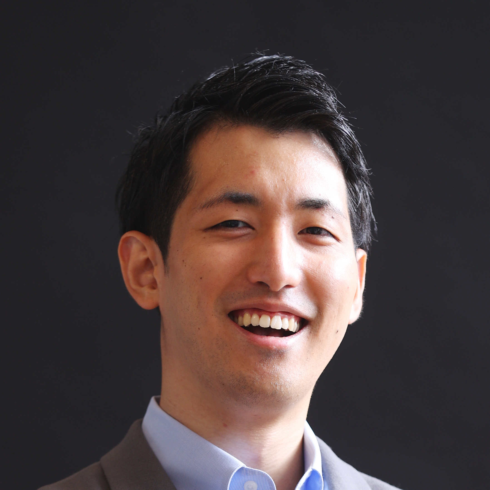

Pacific Technology Labs
Building next-generation
AI products.
About
Pacific Technology Labs is a technology company building intelligent software products powered by artificial intelligence. Founded in 2026 by Hiro Yamada, the company is focused on designing, developing, and shipping AI-native products that solve hard problems across industries.
We believe artificial intelligence will fundamentally reshape how people live and work—and that the companies building this technology have a responsibility to ensure it makes people’s lives meaningfully better. Pacific Technology Labs exists to build products that reflect that belief: AI that is useful, humane, and grounded in real human needs.
Pacific Technology Labs brings together deep expertise in machine learning, product engineering, and software architecture—drawn from years of building products at some of the world’s most respected technology companies and scaling a venture-backed engineering firm from zero to millions in revenue.
The company is headquartered in the United States and incorporated in Delaware.
Areas of Focus
Artificial Intelligence & Machine Learning
We build AI-native products from the ground up—from model selection and training to deployment and production iteration. Our work spans natural language processing, computer vision, and applied machine learning, with a focus on building systems that are reliable, scalable, and genuinely useful.
Product Engineering
We take products from concept to launch. Our approach covers the full product lifecycle—research, design, architecture, implementation, and go-to-market—with an emphasis on speed, quality, and user impact. We’ve shipped products used by millions of users across enterprise SaaS, fintech, govtech, and robotics.
Software Architecture & Infrastructure
We design systems built to scale. Whether it’s a greenfield build or modernizing legacy infrastructure, we bring deep technical judgment to system design, data architecture, and platform engineering decisions.
Technical Strategy & Advisory
We advise startups and growth-stage companies on AI adoption, engineering team building, and technical strategy. Our engagements are hands-on, outcome-driven, and shaped by firsthand experience building and scaling technology companies.
Founder & CEO
Hiro Yamada is the founder and CEO of Pacific Technology Labs. He is a software engineer, entrepreneur, and product builder with over a decade of experience at the intersection of AI and software development.
Prior to founding Pacific Technology Labs, Hiro co-founded and served as CEO of First Mate Technologies, a software and AI engineering studio that partnered with over 40 venture-backed startups to design and ship production-grade products. Under Hiro’s leadership, First Mate grew to $2 million in annual recurring revenue and built a team of 30+ senior engineers. The company’s clients included startups backed by Y Combinator, Andreessen Horowitz, NFX, Village Global, and South Park Commons, spanning fintech, govtech, legal tech, robotics, and enterprise SaaS.
Before First Mate, Hiro spent five years at Asana, the work management platform. He joined as a software engineer on the monetization team in San Francisco, where he contributed to products serving millions of users globally. He later transitioned to the business side to launch Asana’s Tokyo office as its first employee, helping bring the product to the Japanese market.
Earlier in his career, Hiro held engineering roles at Palantir Technologies, where he worked as a Forward Deployed Product Developer, and at Google, where he built features for Google+ Communities on Android.
Hiro holds a Master of Business Administration from Harvard Business School, a Master of Science in Engineering Sciences from Harvard, and a Bachelor of Arts cum laude in Computer Science from Harvard University. He was a UNIQLO HBS Fellow, receiving full tuition sponsorship for his MBA.